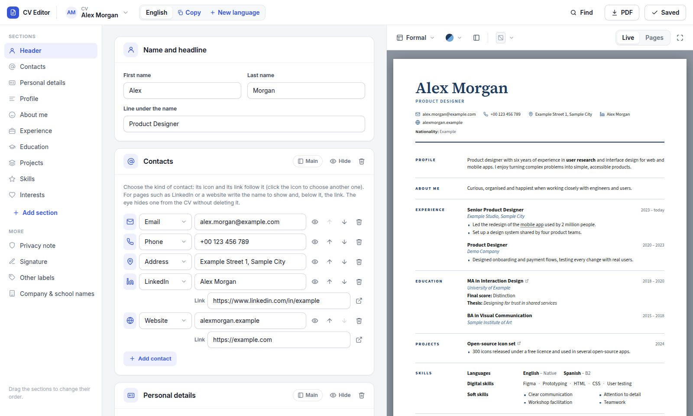
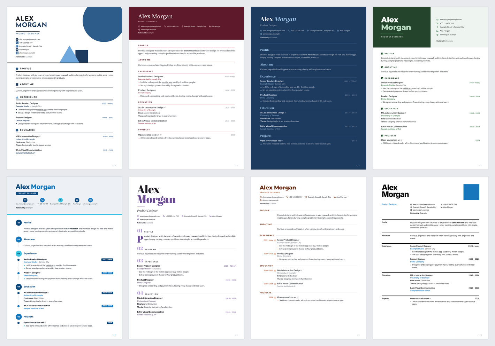

Write your CV once.
Get it in every style and language.
A free, open-source CV editor with a live preview. Export polished PDFs in 50 styles and 16 colours, in as many languages as you need. It runs on your own computer: no account, nothing uploaded.

Everything a CV needs
Edit the content once; the design, the language and the photo are choices you can change at any time.
50 styles, 16 colours
From formal to creative, with or without a sidebar. Switch style and the preview changes at once.
Many languages
Keep one version per language, and translate a new one automatically: with a free AI model on your computer, or with Microsoft's translator (free tier, with your own key).
Private by design
The editor runs on your computer and your CVs are plain files in a folder. No account, no online service, no tracking.
Any of your photos
Add several photos and frame each one; every photo, or none, becomes its own version of the PDF.
One CV per person
Keep CVs for the whole family, or one per kind of job: duplicate a CV and adapt the copy.
Export and import
A CV and its photos fit in one .zip file: keep it as a backup or move it to another computer.
Pick a style, any time
The same CV in eight of the 50 styles. The content stays the same; only the design changes.

Get started
It takes a minute. You need Python 3.11 or later and Chrome, Chromium or Edge.
- Download
the project and unzip it, or clone it:
git clone https://github.com/elisabetta115/cv-editor.git - Open the editor: in the project folder, double-click Start CV Editor - Windows
on Windows or Start CV Editor - Mac.command on a Mac; on Linux, run
It opens in your browser. The first time, Windows or macOS may ask you to confirm: the guide shows how.python3 src/editor.py - Create your CV, or import the example to try it first, and press PDF.
Everything else, from automatic translation to a shortcut on your desktop, is explained in the guide on GitHub.